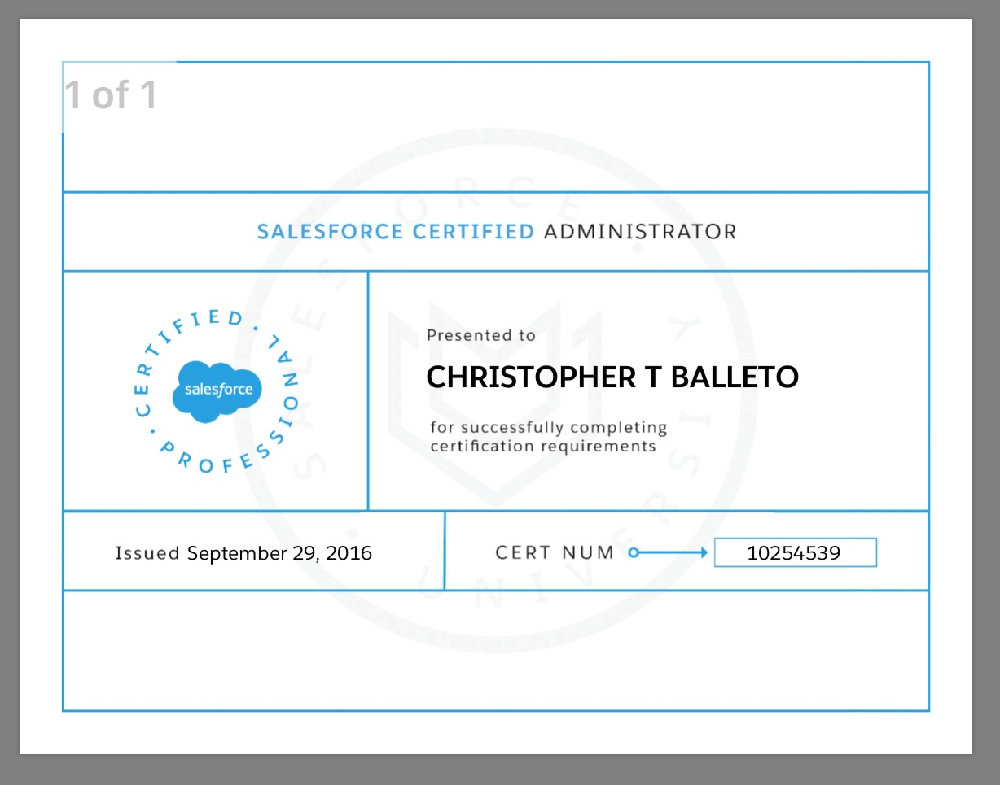

Siblings: I have 2 Sisters Jen and Katie
Hometown: Algonquin, IL
Favorite Food: Sushi
Favorite Movie: The Departed
Favorite TV Show: The Office
Fun Fact: I get married on the 26th of November
Pets: I have a golden retriever/yellow lab mix dog named Hope
Ice Cream: Butter Pecan